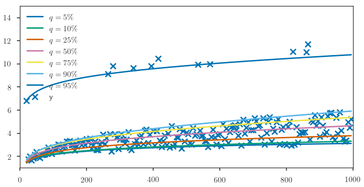

# import packagesimport numpy as npfrom scipy import statsfrom share_code.utils import plt, sns, my_saving_display, pinballimport pandas as pdimport statsmodels.api as smimport statsmodels.formula.api as smfimport matplotlib.pyplot as pltfrom statsmodels.regression.quantile_regression import QuantRegsns.set_palette("colorblind")
/home/jo/anaconda3/lib/python3.6/site-packages/statsmodels/compat/pandas.py:56: FutureWarning: The pandas.core.datetools module is deprecated and will be removed in a future version. Please use the pandas.tseries module instead.
from pandas.core import datetools
# to get images in the notebook%matplotlib inline
dirname ="../prebuiltimages/"imageformat =".pdf"# should be .pdf or .png # some colors I'll usebrown = (0.64, 0.16, 0.16)purple = (148./255, 0, 211./255)plt.close("all")saving =True# True
# Extracted from the statsmodel example# http://www.statsmodels.org/stable/examples/notebooks/generated/quantile_regression.htmldata = sm.datasets.engel.load_pandas().datadata.head()
income
foodexp
0
420.157651
255.839425
1
541.411707
310.958667
2
901.157457
485.680014
3
639.080229
402.997356
4
750.875606
495.560775
mod = smf.quantreg('foodexp ~ income', data)quantiles = np.arange(.05, .96, .1)quantiles=np.append(quantiles,0.5) # adding the LAD estimator at the last positiondef fit_model(q): res = mod.fit(q=q)return [q, res.params['Intercept'], res.params['income']] +\ res.conf_int().loc['income'].tolist()models = [fit_model(x) for x in quantiles]models = pd.DataFrame(models, columns=['q', 'a', 'b','lb','ub'])ols = smf.ols('foodexp ~ income', data).fit()ols_ci = ols.conf_int().loc['income'].tolist()ols =dict(a = ols.params['Intercept'], b = ols.params['income'], lb = ols_ci[0], ub = ols_ci[1])print(models)print(ols)
# randomly corrupt the data above the 0.95 quantiledf_outliers = df.copy()last_quantile = y > predict_log_example(df_outliers, models.loc[0.95])df_outliers.loc[last_quantile, 'y'] +=5+ np.random.rand(last_quantile.sum())
/home/jo/anaconda3/lib/python3.6/site-packages/statsmodels/regression/quantile_regression.py:193: IterationLimitWarning: Maximum number of iterations (1000) reached.
") reached.", IterationLimitWarning)

pd.options.display.float_format ='{:,.4f}'.formatmodels["outlier"] =Falsemodels_outliers["outlier"] =Trueres = pd.concat([models, models_outliers])res.set_index([res.index, 'outlier'], inplace=True)res.sort_index(inplace=True)res # see how only the 0.95 quantile values are strongly impacted